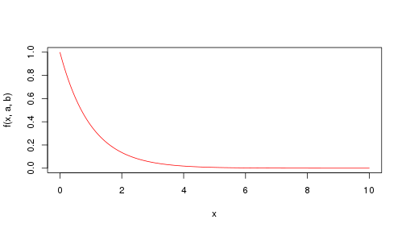
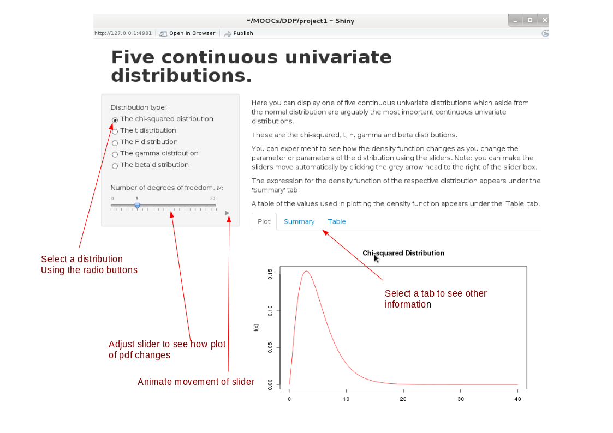

The Shiny App displays five important standard distribution that arise in various areas of statistics.
- the Chi-squared distribution;
- the Student's t distribution;
- the F distribution;
- the gamma distribution; and
- the beta distribution.
Quaffle51
The Shiny App displays five important standard distribution that arise in various areas of statistics.
The app makes use of the following features:
The following code was used to plot the gamma distribution where a and b are variables set using the sliders.
a <- 1;b <- 1; x <- seq(0,10,0.01);
k <- function(a,b) (b^a)/gamma(a); f <- function(x,a,b) k(a,b) * x^(a-1) * exp(-b*x)
plot(x, f(x,a,b),type="l",col="red")

